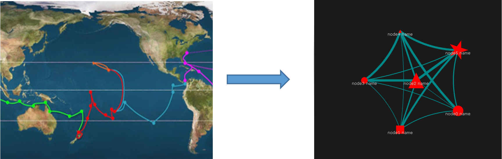
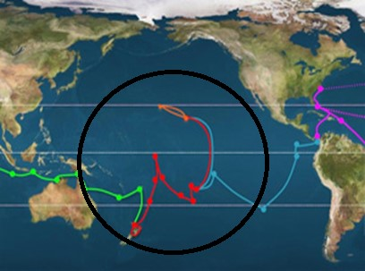
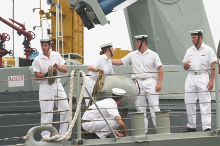

Overview
The system works like Voyage.
Departing from the Starting point given by the Sailor or Captain,
it Explores the world within certain Scope. During the Voyage,
The system collects and Save the data which will be Analyzed and used to Make a Map.
Keywords
Starting point - the original source where we start with. It usually comes from user’s input (typically the article URL)
Explore - the process that the system searches and collects data among online news sources that which link to, quote, and mention the
Starting point.
Save - store collected data for further use (eg. To
Make a Map,
Convert and
Analyze)
Map - an interactive visualization.
Each
point represents one specific news source, and the other points linking to that point are other online sources
(English-languge news sources and twitter users) which link to, quote, and mention that original source.

Make a Map - making a
Map (an interactive visualization like the upper-right picture) by using data collected through
Explore.
Scope - a list of global English-language news sources that are monitored.
Explore cannot be operated outside the
Scope.
Also, users can set the Scope to define a list of global English-language news sources to monitor.

Convert - retrieve particular stored data in other formats such as XML, JSON or Web ARChive (WARC).
Analyze - get statistics based on the collected data, or sort data by some features.
Sailor - a kind of users with restricted permissions.
They can only perform normal operations such as
Explore,
Save, and
Make a Map. (Usually for researchers)

Captain - a kind of users with all permissions, they take control of all
Sailor users. In addition to the
Sailor’s permissions, they can change edit the configuration file, use terminal and so on. (Usually for Librarians)